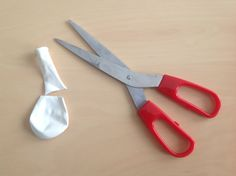
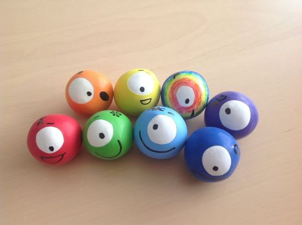

<div class="container">
  <div id="page1">
    <div>

      <h2>Déroulement</h2>

      <iframe width="560" height="315" src="https://www.youtube.com/embed/faQ1IivJ_Ks" frameborder="0"
        allow="accelerometer; autoplay; encrypted-media; gyroscope; picture-in-picture" allowfullscreen></iframe>

      <ol>
        <li>
          Prendre un ballon de baudruche et découper le goulot.
        </li>
        
        <li>
          Mettre de la terre à l’intérieur du ballon à l’aide d’un entonnoir (qui peut être fabriqué en coupant le haut
          d’une bouteille plastique.)
        </li>
        <li>
          Prendre un autre ballon, en découper le goulot et l’enfiler comme une chaussette sur le premier ballon. La
          balle de jonglage est prête.
        </li>
        <li>
          Pour “habiller” la balle prendre un autre ballon, en découper des petits morceaux et l’enfiler par-dessus le
          premier. Il est possible de recommencer l’opération plusieurs fois.
        </li>
        <li>
          Pour décorer la balle à l’effigie de Gaulois célèbre, tu peux aussi dessiner au feutre les traits de têtes
          Gauloises.
        </li>

      </ol>


      

      <h2>Pour apprendre à jongler, rien de plus simple</h2>

      <ul>
        <li>
          <strong>Technique 1 :</strong> avec deux balles. Lancer la première dans les airs et faire changer la deuxième
          de main. Puis lancer la deuxième dans les airs et changer de main avec la première. Ça forme ainsi un cercle !
        </li>
        <li>
          <strong>Technique 2 :</strong>une balle dans chaque main, envoyer vos balles en l’air l’une après l’autre puis
          les rattraper toujours l’une après l’autre. Compliquez un peu le geste en envoyant vos balles de façon
          croisée.
        </li>
      </ul>


    </div>
  </div>
</div>